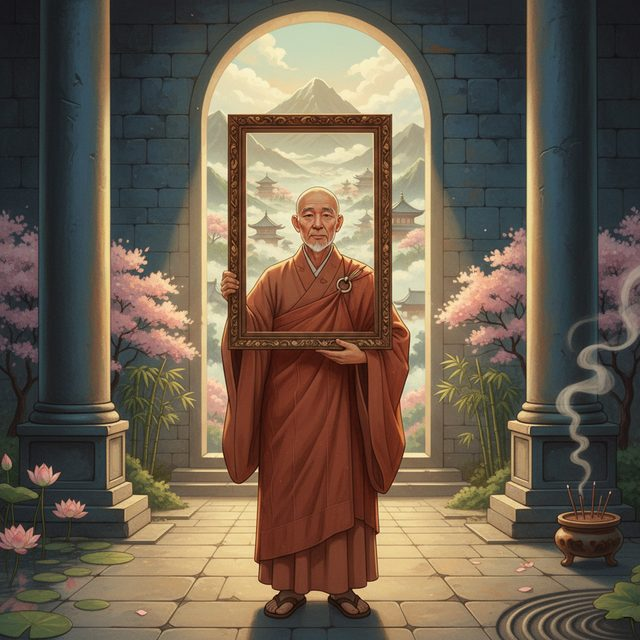
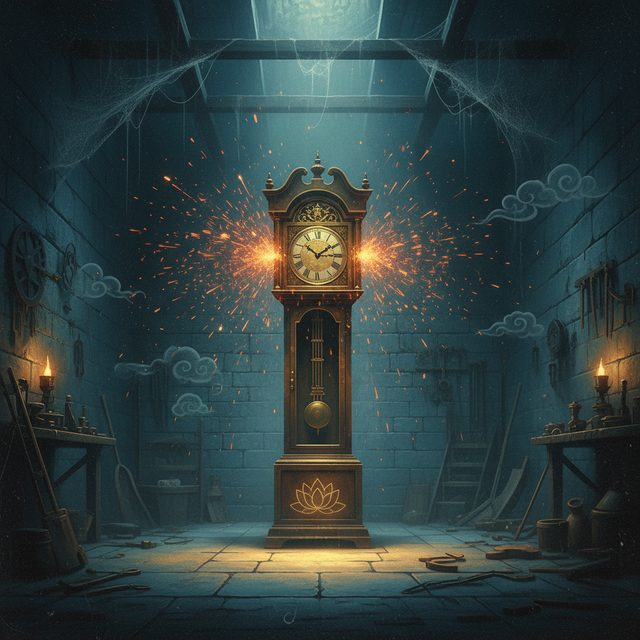
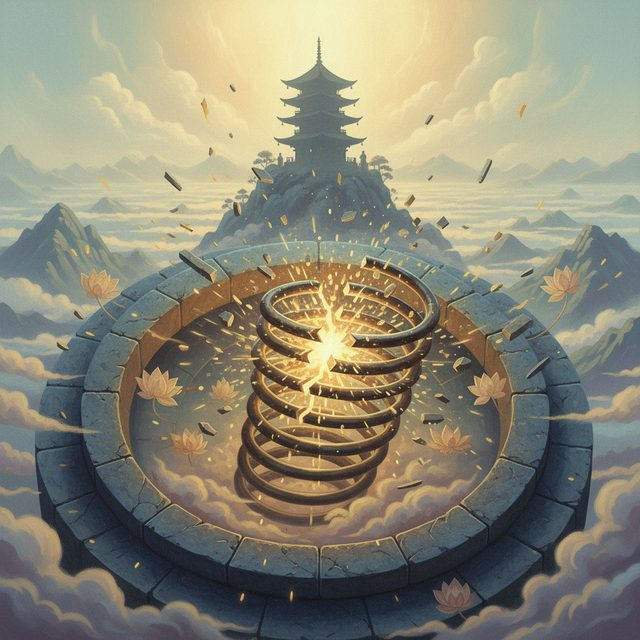
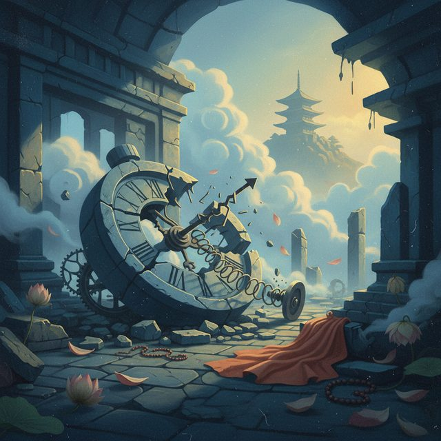
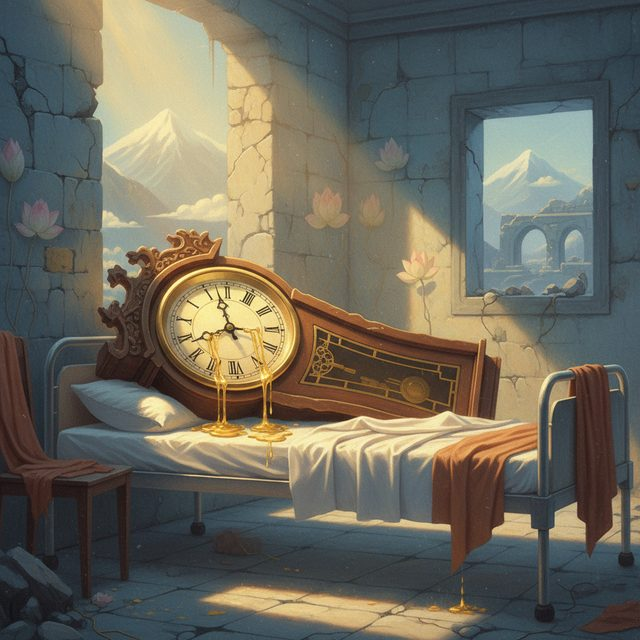
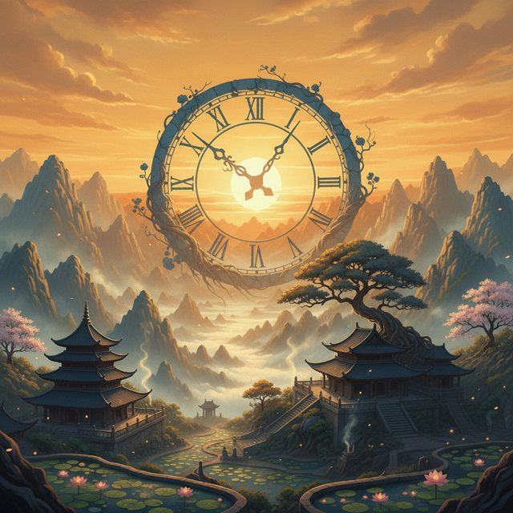
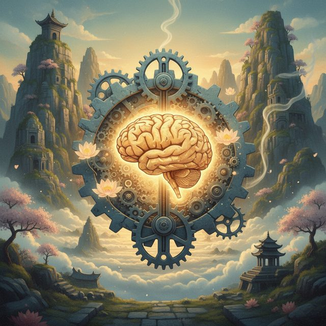
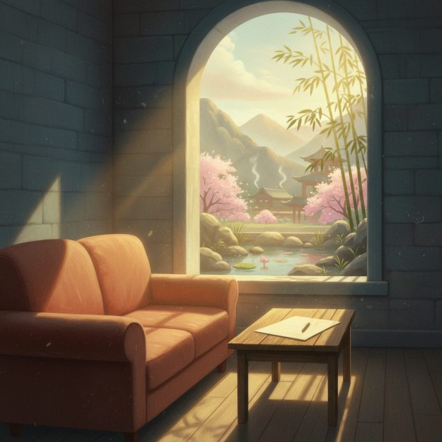

CH12-026 — images
【不安】不安に勝とうとするほど負ける｜勝ち方は逆
ep
CH12
Script Viewer
書庫
snapshot
guide
台本
音声
サムネ
画像
← CH12-025
CH12-027 →
CH12-026
画像
updated_at: 2026-01-14T03:14:08.313083Z
run_id:
CH12-026
CH12-026
休むのが怖い
CH12-026
マグロのように

CH12-026
怠け者の言い訳ではない
CH12-026
時計の物語へ
CH12-026
時計の国へ
CH12-026
チクタクの誇り

CH12-026
夜も働き続ける
CH12-026
怠け者と罵る
CH12-026
完璧なリズム
CH12-026
老時計の眉ひそめ

CH12-026
ゼンマイが折れる

CH12-026
動けなくなる
CH12-026
スローの言葉

CH12-026
時計の絶望
CH12-026
初めての静寂

CH12-026
時間の意味
CH12-026
復帰したチクタク
CH12-026
休息の本当の意味

CH12-026
機械としての人間
CH12-026
自己肯定感の低さ
CH12-026
Human Being
CH12-026
死ぬときに何を思う
CH12-026
デフォルト・モード・ネットワーク

CH12-026
実践的な休息
CH12-026
心の美容液